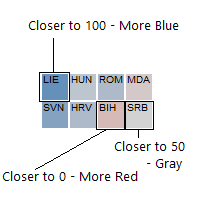
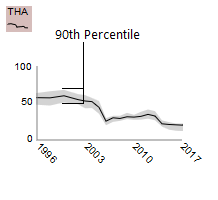
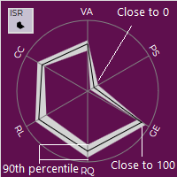

The goal of this interactive visualization is to help ease exploration and comparison of the Worldwide Governance Indicators. These indices have been calculated since 1996 and provide six ways of assessing "good government" across the globe. For more details about the six indices, which are represented as percentiles from 0 to 100, and the methodology, click the link in the title (or click here) to be taken to the WGI homepage.
ONE INDEX, ONE YEAREach country is represented as a geolocated square. This is to enable easy comparison even between countries with small geographic area. Squares are colored by their index value for the selected year, with more red meaning lower on the 0 to 100 range, and more blue meaning higher. Clicking on a country will display its full name in the "Info Window" as well as its 90th percentile range for value for that index for that year.
ONE INDEX, ALL YEARSEach square contains a stripped-down line graph for the 1996-2017 period of the survey. This enables comparison between countries as well as quick assessment of improvements or downgrading over time. Colors here are based on an average value for the index over the time period. Clicking on the country displays a larger version of the line graph in the "Info Window" that includes the 90th percentile uncertainty over time in grey.
ALL INDICES, ONE YEAREach square contains a spider chart with each vertex determined by an index value. This enables comparison between countries as well as understanding of strengths or weaknesses among the indices. Colors here are based on an average index value for the year. Clicking on the country displays a larger version of the spider chart in the "Info Window" that includes the 90th percentile uncertainty for the indices in grey as well as vertex labels.
ABBREVIATIONS: VA - Voice & Accountability, PS - Political Stability & Absence of Violence/Terrorism, GE - Government Effectiveness, RQ - Regulatory Quality, RL - Rule of Law, CC - Control of Corruption
CONTINENTS: Africa, Asia, Central America & Caribbean, Europe, North America, Oceania, South America